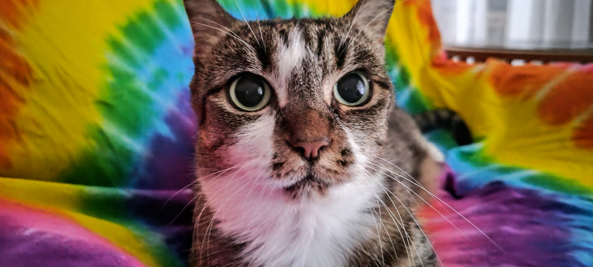
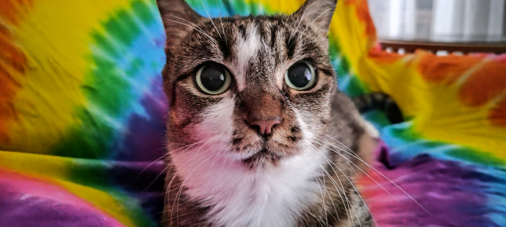
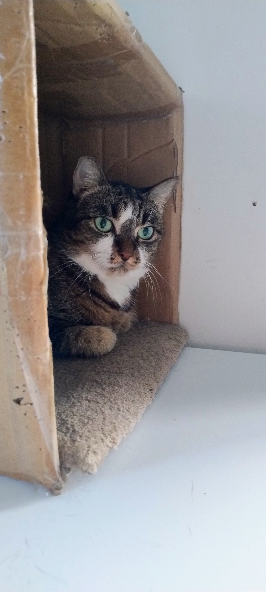
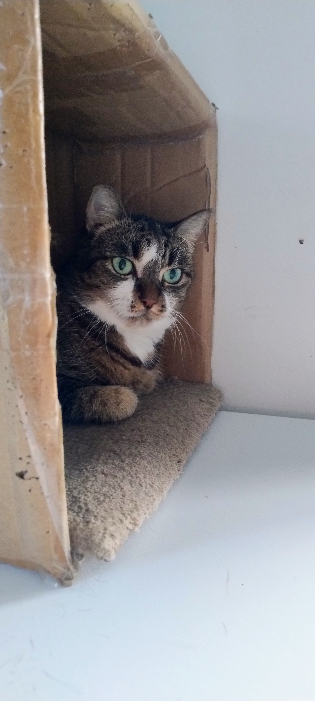
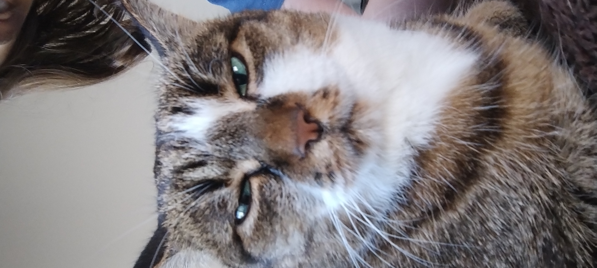
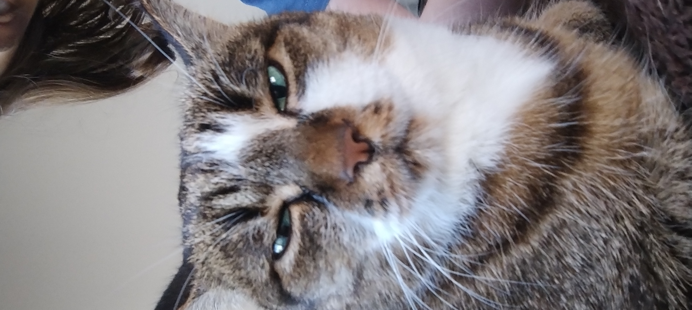

Alia!
General
Hi, I'm Alia! I'm a transfem programmer from down under, who writes small Python scripts in their free time.
I have diagnosed ASD (Autism), ADHD, OCD, and Anxiety, so I can have trouble talking and communicating, and I might not act to your standards. This is also why I'm called AbnormalNormality, because my normal is your abnormal.
I'm also Pansexual and, unfortunately, fall in love very easily.
I also have incredibly low self-esteem, and get depressed very easily, as well as being very prone to panic attacks.
Activities
I make small pieces of code in various languages. Though I prefer Python, I have also been learning C#, Unity, HTML, CSS, JS, F#, and Java.
I hope to one day make app, whether it be a useful programme or a game, that people actually use.
But I don't program all the time, I also play games, just much less often. Some of my recently played games (some new, some replays) are:
- Minecraft (Java Edition)
- Stardew Valley
- Scrambled Scarlet (check it out!)
- Bloons TD6
Though my absolute favourite games are:
- Minecraft (Java Edition)
- Spore (mostly on disc)
- Hades II
- Skyrim SE
I fricking love math, give me some simple algebra and I'll be entertained. y = mx + c is hype and you can't tell me otherwise.
Interests
Alongside programming, I also enjoy Yu-Gi-Oh, and drawing.
I have never lost a Yu-Gi-Oh match! Though I've never played competitively, and the last time I fought against someone other than myself was in primary school, but my point still stands.
My favourite show by far is Doctor Who, of which I have watched all modern episodes (only a few classic episodes).
I don't have a general rule for the music I like, but I usually hate stuff like Taylor Swift and Sabrina Carpenter. Some of my favourite artists (ranked) are:
- Jazz Emu (proud of the visual album Ego Death)
- Lemon Demon
- Weezer
- Murray Gold
- Weird Al
- Beethoven/Mozart/Vivaldi
I also really like math. Something about all the calculations tickles my brain.
I calculate a lot, every hour of every day I am trying to figure out what the most optimal move is. I do miscalculate these a lot thought.
I believe everyone needs to be perfect, which isn't a very good mentality, especially since I'm not perfect myself, which causes issues for me.
I go through phases of words I use, I currently like using:
- Yupperdoodles
- Yeaglesmeagle
- Radical
- Communism
Pets
Bob(cat) Idiboo
We found Bob as a stray living in our backyard and eventually adopted her. She's usually very grumpy, but has been getting more playful lately. I think she's 14 as of 2025?
 

 

 

Sylvie, Destroyer of Worlds
Born March 2024 (and adopted July), Sylvie is a tiny terror who will hopefully grow out of her tyrant phase. She loves terrorising her sister Bob and biting anything she can find.
Chickens & possums
I also have chickens and possums. Technically we don't own the possums, but they live in our house and they have a little box to hide in.
As of February '25, we have 4 chickens:
- Macy/Blacky
- Fluffy
- Poppy
- Pterry (the 'p' is silent)
We had two chickens of the same breed but now we only have one and we don't know which one. It's more likely for Blacky to be the survivor but we all call them Macy.
Transition timeline (ordered)
Come outGrow out hairBuy skirtsMake up- Shave:
legs
Miscellaneous
The Imperial system. I don't get Americans, I get it's difficult to get everyone to use a new measuring system, but don't insist yours is better!
There are 12 inches in a foot, and 3 feet in a yard. Why don't you say you're 2 yards tall?
Oh it's 100°? That's burning! Oh, Fahrenheit. so 37°.
Humour
 Cactixz when one of Bedrock edition's most popular features is it's PVP, but many people don't realise it doesn't actually look like this, but rather like this: with inconsistent knockback and poor gameplay, which begs the question: why isn't Bedrock's PVP the same as Java edition? Well you see: Minecraft Bedrock is full of mobile players and players who play on low-end devices, who simply wouldn't be able to run the new combat system.
Bowie: "I hate furries", also Bowie:
Cactixz when one of Bedrock edition's most popular features is it's PVP, but many people don't realise it doesn't actually look like this, but rather like this: with inconsistent knockback and poor gameplay, which begs the question: why isn't Bedrock's PVP the same as Java edition? Well you see: Minecraft Bedrock is full of mobile players and players who play on low-end devices, who simply wouldn't be able to run the new combat system.
Bowie: "I hate furries", also Bowie:
Okay, I know this is a really bad idea, but I'm already here, so
Here we fucking go! Rawr! x-3
Nuzzles, pounces on you
UwU, you're so warm
Couldn't help but notice your bulge from across the floor
Nuzzles your necky wecky; murr; (he-he)
Unzips your baggy ass pants, oh, baby, you' so musky
Take me home, pet me and make me yours
And don't forget to stuff me
See me wag my wittle baby tail, all for your bulgy-wulgy
Kissies and lickies you' neck, I hope daddy likies
Nuzzle and wuzzles your chest (yeah), I be (yeah) getting thirsty
Hey, I got a little itch, you think you can help me?
Only seven inches long, UwU
Please adopt me!
Paws on your bulge as I lick my lips
(OwO, punish me please)
Gotta hit 'em with this furry shit (he don't see it coming)